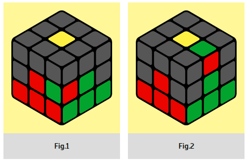

If you are unlucky and the top layer runs out of the required edges, and the
second layer is not assembled - no problem! Place the incorrectly assembled edge on the right
(Fig. 1) and do RU R' U' ➪ L' U' LU
In words it sounds like this: right bang-bang, interception to the right (green center in front
of you) left bang-bang and then usually arrange the edges. Congratulations, after arranging all
the edges in the second layer, the cube is assembled by 60 percent. Less than half of it reaches
this stage, so if you managed it, then you are great and your Rubik's cube will soon be
assembled.
|  |
The ribs are gone
|